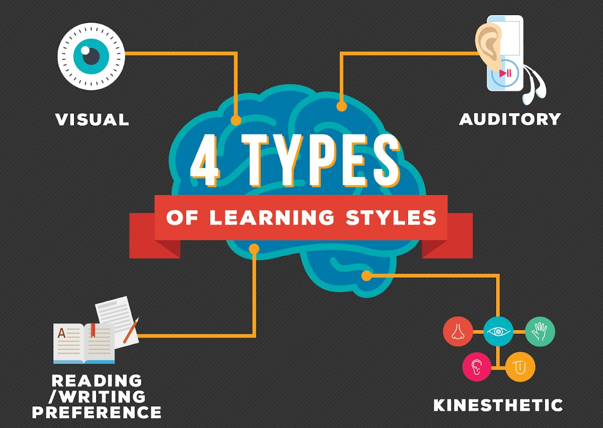

Learning to Love Learning
Learning to love learning is about shifting your mindset from seeing education as a chore to embracing it as a lifelong adventure. When you approach learning with curiosity rather than obligation, it becomes less about grades or outcomes and more about growth and self-discovery. Each new concept, skill, or challenge becomes a stepping stone to a deeper understanding of the world and your place in it. This shift often begins when you connect learning to your passions, ask meaningful questions, and recognize the joy that comes from overcoming difficulty and mastering something new.
Loving learning also empowers you to thrive in every stage of life. In a world that’s constantly changing, those who continue to grow and adapt will find the most fulfillment. Whether you’re reading a book, developing a new hobby, or solving real-world problems, a love of learning keeps your mind active, your spirit engaged, and your confidence growing. It opens doors not just academically or professionally, but personally—building character, resilience, and a sense of wonder that can carry you through anything.